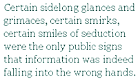

What about this knot in the head?
Tom Bowl could feel it there so often and so clearly, tightening between the ears, as if the direction of thought had been reversed somehow, as if thoughts were things that returned, that curled back round and condensed, as if his brain were a fist continually calling its reckless fingers home. How he ached for emptiness then, longed to be flooded with it, to see each thought set adrift upon it like an object on the surface of a river that overflows its banks and uninvited enters homes and lives to carry off and scatter all the trappings of our everydays. But that was not why Tom Bowl began to drink. Later on, there was certainly an emptiness found lurking within the alcohol that was more than willing to flood, to untie and separate. But in the beginning, which is sometimes found out past the end, it was quite the opposite, which is sometimes quite the same. In the beginning Tom Bowl drank in order to bring things closer, in order to fill the gaps between things with a liquid possessed of a sufficient magnetism to draw them in. Eventually, one would suppose, it became a sort of tug-o-war between the drawing in and the pushing apart, between the near and the far, the right here and the all the way over there. As Tom Bowl himself was bodily swept along and away by this perpetual contraction and expansion, things began, more and more rapidly, to disassemble completely. Living became almost simpler then. Merely a matter of trying to focus on even the tiniest of details, every cursed or blessed one of which kept on slipping or sliding away, out of reach or recognition. Until there was nothing familiar left at all. Like when one wakes up dead.
Tom Bowl often seemed too big for any room he found himself in. He seemed to be haunted or shadowed by some vast and thoroughly ridiculous miscalculation. A ton of rock, one enormous boulder, is rolled indoors and then abandoned! As the lights come up in the room, glaring! And the rock has hands which itch uncontrollably whenever anyone else enters the room. And the rock has feet curled up into hard little balls inside big old shoes. The rock has all of that, plus some primeval memory of rain, of a time long before crowded room and bright lights, when there was only air, only air opening painfully wide all around and rain falling and falling and wearing away, bit by bit, the surface of a great weight, a ton, or more, of rock.
For ten long and unwieldy years, the rock managed, somehow, to hold down a job as a mailman.
It wasn’t easy.
It wasn’t easy for Tom Bowl, it wasn’t easy for his employers, and it certainly wasn’t easy for those thousands of correspondents for whom he acted as go-between. As for the letters themselves, well, they had by far the worst time of it. Folded, torn, and stained, they came to seem less the objects of that process commonly called delivery, and more the victims of some inexplicable and obscene cross-pollination. Apparently the deceptively simple instructions contained in the numbers of their street addresses and zip codes were merely a disguise for some more complex series of commands that only Tom Bowl could decipher from one day to the next.
An undelivered letter is, of course, an unfortunate thing, a loss, a disappointment, at the very least an inconvenience. But a mis-delivered letter is something else entirely — and as time went on, more often than not the recipients of Tom Bowl’s consistently re-routed messages began to open them despite the fact that their names appeared nowhere at all on the envelopes they found stuffed sloppily into their mailboxes each morning. Such minor confusions, if allowed to continue unchecked, can ultimately prove quite subversive;and a civilization, as it grows more and more complex, becomes more and more vulnerable to the drunken mailmen in its midst — those agents of anarchy who, without even trying, are capable of undermining its very foundations.
In the small suburban community where Tom Bowl interfered with the mail for ten years, his erratic delivery service, coupled with the innate curiosity of the human animal, soon guaranteed that everyone knew everything about everyone else’s business. These revelatory breaches of privacy started slowly and sporadically, and went for the most part unacknowledged. Certain sidelong glances and grimaces, certain smirks, certain smiles of seduction were the only public signs that information was indeed falling into the wrong hands. But by the end of Tom Bowl’s tenure at the Post Office, a sort of confessional epidemic had begun to sweep the neighborhood, and it was not uncommon for men and woman to pen horrible stories, not about others but about themselves, and then send them off with a stamp and with any old address whatsoever, or with no stamp and no address at all, confident that Tom Bowl would deliver the letter as he saw fit, pre-paid postage or no pre-paid postage.
It was quite cathartic, this quietly hysterical mass confession, quite intoxicating in fact. It was precisely this almost wanton sense of intoxication which was the key to the dangerous social virus introduced into the otherwise staid community’s emotional water supply. Suddenly they were reaching out, there was no doubt about that, they were all reaching out desperately for anyone or anything at all, just as Tom Bowl himself had been reaching out for years with every swig he took from his bottle of gin or vodka or bourbon or paint thinner or whatever else happened to be handy at the moment when the thirst to connect came over him. They were all reaching out, but blindly, and eventually they became addicted, though not quite so tragically as Tom Bowl — addicted to these letters cast out into the void, addicted to these small desperate acts of faith in the inscrutably magnetic network of a post office or a universe which for ten chaotic years had chosen a drunken wreck of a rock of a man, Tom Bowl, as the unwitting ambassador and messenger of what was left of its gods.
It seemed incredible that the situation was allowed to go on for as long as it did. Apart from the bottles of liquor which leaked all morning long in his mailbag and drenched and perfumed each day’s batch of letters, there was the fact that Tom Bowl, as time went by, developed a peculiar preference for delivering his mail in the rain. It cooled and calmed him, that rain, it soothed his itching hands, and squeaked and whispered reassuringly, with each step he took, in the soles of his worn and leaky shoes. As the years passed, Tom Bowl would often store a portion of the letters entrusted to him in a pair of dirty old pillow cases, saving them up for a rainy day. On stormy mornings, tanked to the gills, by the time Tom had helped guide the mail to what he was convinced was its proper destination, it had often been reduced to no more than a wad of faintly ink-stained paper pulp, stinking of gin — from which he tore, and dutifully delivered, one dripping handful at a time.
On the afternoon when Tom Bowl was finally fired from his job, he seemed quite surprised, shocked even. “The mail is not arriving according to plan,” was the official complaint, repeated like a refrain in response to each of the preposterous arguments Tom Bowl summoned in his defense.
Why, just that morning, Mrs. Freedhope had received an empty brandy bottle and half a handkerchief in her mailbox. And she was far luckier than her next door neighbor, whose box, when opened, contained not a single greeting card for her upcoming birthday, but only a handful of something which looked like dirt and smelled much stronger.
“Yes, everyone receives mail,” his employers were forced to admit, “but not necessarily their mail.”
Tom Bowl was mystified, even annoyed, by such fine and fancy distinctions.
“You have no understanding of the point of delivery! I can’t be responsible past the point of delivery!” he cried out in righteous exasperation, throwing his hands up into the air and turning, at last, to leave. None of his employers dared raise their eyes from the tops of their polished black shoes as Tom Bowl whirled around at the last minute and whispered in a cracked voice that leaked sadness like an old steam pipe, “What do you people want from me?”
For several minutes after he bolted from the room, no one moved or said a word. Tom Bowl had failed to close the door behind him, and the small group of shaken senior supervisors stood staring at that open door as at a gaping wound, an irreparable tear in the closed circuit of delivery through which anything at all might now enter.
Were it not for the persistent drought that parched the entire area that summer, the already parted postal floodgates might have been flung open far wider, far sooner. The lights in Tom Bowl’s house burned feverishly all night, every night, and a persistent scratching noise, as of rats, or roaches, or a pencil on paper, was distinctly audible behind his locked door at all hours. Weeks passed, painfully uneventful weeks for the residents of the community. “Still no rain,” they’d comment expressionlessly to one another, looking up at the sky, studiously avoiding the raging thirst in each other’s eyes. Only gradually did they come to realize just how dependent they’d become upon certain unpleasant surprises delivered to their doorsteps. Morning after morning, now, it was the same tidy bills and bank statements, the same tightly sealed envelopes and carefully cancelled postage stamps. Poor Mrs. Freedhope and her neighbor — formerly so outspoken against what they viewed as an inexcusable municipal outrage, they now found themselves lacing their morning orange juice with a drop or two or ten of something far stronger just to enliven the otherwise routine task of checking their brutally repaired mail.
A month after Tom Bowl’s dismissal from his job, the storm finally broke. Thunder, lightning, high winds, and torrential rains washed the drunken messenger out of his house at last. It was just past dawn, but there was no trace of sun. A low ceiling of dark, bruised cloud drenched the deserted streets in shadow, and it was through this dismal twilight that Tom Bowl trudged, a stained sack full of blank envelopes in one hand, and a jug of gin in the other.
Word spread quickly through the town, one suburban drumbeat at a time. Telephones rang imperatively, curtains parted ever so slightly, small circles were rubbed clear on the fogged glass of strategic ground floor windows. Scarcely had Tom Bowl disappeared around any given corner, when doors already ajar would swing silently open, and the invariably solitary figures which emerged would scamper down the front walk to the mailbox and then dart back inside, envelope in hand, already soaked to the skin. The rain provided a perfect cover — there would be no casually exchanged pleasantries this morning, oh no, none of that — and though, on certain streets, ten or twenty such mad dashes might take place simultaneously, no one paid the slightest attention to anyone else.
Meet me tonight in the field behind the junior high school, Tom had scribbled on a thick slice of pale pink stationery, I want to hold you. The letter fluttered from Mrs. Freedhope’s trembling hand and landed on the carpet at her feet. I want to hold you close to me in the rain until we melt together as one. It rained all morning and all afternoon, it rained on into the night, and at fifteen minutes before midnight, both Mrs. Freedhope and her neighbor could be seen scurrying down their front walks, collars turned up and umbrellas turned inside out by a particularly nasty gust of wind. Neither woman hesitated for a moment, neither woman acknowledged the other, as they both darted across the same perilously slippery street and ran off in the same direction, that of the local junior high school. It had not yet occurred to either woman that Tom Bowl could have delivered an identical letter to everyone, that for week after sleepless week he’d been copying the same plea and promise over and over again, praying fervently for rain.
They came in droves, at first haunting the perimeter of the enormous football field behind the school — lurking there in the distance, concealed behind trees or around the corners of the building itself. The rain fell so heavily that at first one could not be sure that these shadows were people at all. Drenched and veiled, gray and motionless, they might have been fenceposts, or trashcans, they might have been shrubs uprooted by the storm or by vandals, or discarded appliances abandoned to rust in the dead of a dull night.
Then everyone began to move at once, creeping forward onto the barren field, no longer making any attempt to conceal themselves. It was as if some silent order had been given, as if some master marionette string had been pulled. Perhaps the truth had already begun to dawn on them, the truth about the letter. Within five or ten minutes the field was filled with people — gray, silent figures, dripping wet, standing shoulder to shoulder, dazed, stunned, as if hypnotized — as if waiting for something.
The first few embraces were almost spastic, abrupt and clumsy gestures, but like ripples in water they were apparently contagious and before long the entire crowd had surrendered to an impulse that bound them together into one shapeless sponge, a single monstrous human knot, melting and drowning in the storm, trembling and faceless in the darkness.
What about this knot in the heart?
Tom Bowl could feel it there so often and so clearly.
The gathering subsided gradually. A pair of policemen, who’d also received the letter, gently encouraged the crowd to disperse, dismantling one embrace after another before things could get out of hand. There were a few stragglers, a few lost children, a few women weeping on the fringes, as well as a few persistent rumors of illicit homosexual activity in the mud near the western goal-post of the ball-field. But for the most part the exodus was an orderly one, and by two o’clock in the morning, still raining heavily, both the field and the streets of the town were deserted. The townspeople had all apparently returned to the shelter of their homes where hot showers, and cups of steaming tea, and the warm white sheets of their beds awaited them. All, that is, except for Tom Bowl. His instincts for self-preservation were of no help in this regard — and that primordial rain with which he’d been drenched for as long as he could remember went on falling and falling, chilling him to the bone, where he lay in his hiding place at the edge of the deserted football field until dawn. It was not surprising, then, that Tom Bowl died of pneumonia — only that his death took so long. For weeks he lay suffering, first in bed, later on the floor, finally at the bottom of a flight of stairs — burning and hallucinating with fever, asking himself right up until the last moment if it had ever really happened at all, this ghostly suburban orgy in the drowned field at midnight — asking himself if it could have been true, really true, this one shining, dark, damp moment.